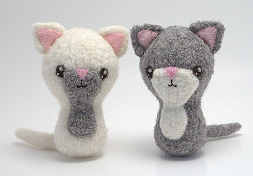
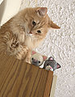
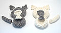
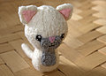
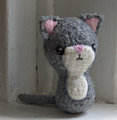
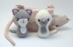
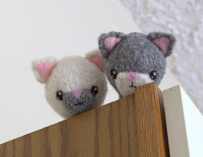

|
||
Premium Patterns Wintry Mix Mitts Love Bytes HawkeyeFree Patterns Kiddie Cadet Summerlin Ruffled Scarf Seamless DS Sock Simply Seamless Pouch Myriads of MushroomsExtras DIY Mitten Blocker Felt Patch Tutorial Yarn Dyeing Tutorial Needle Pouches Knitting Journal |
July 02, 2007 - Posted by Grace SchneblyThe Opposite TwinsI finally finished making my friend’s birthday present Saturday. To go along with the tote I made her a Swat Team Kitty… and she better appreciate it! I know that Alice and I have said this before, but wow are these guys a bunch of work for something 4” tall. I really recommend making only one, then taking a break before starting another. I have a new found respect for Alice who created four Backyard Critters at one time.  Project Specs I like the call these guys the Opposite Twins. I decided to make two so I could keep one for myself, and I am happy with how they both came out. Before sewing the ears and tails on, they looked just like baby seals which shows how many creatures you could turn these guys into without much work. I am going to give the dark one to my friend and keep the light one for myself. I don’t know if the dark one really looks like her cat. The colors are about right, and it is as close as I could come without knitting some custom piece for the spot. However the white one ended up looking just like a kitty I had while growing up. Sadly she passed away while I was visiting home last Christmas. She is missed, and I am glad that I now have this little guy to remind me of her. The knitting was really simple as usual for most Crafty Alien toys. I did find an error; it is a simple fix but just a tad bit annoying. When you start to knit the body, omit Row 1, the first knit row after picking up the stitches. If you knit this row then the whole body will be inside out with the purl side instead of the knit side showing. Also in the instructions for the chest patch, Row 9 is missing completely. I just knit this row and it turned out fine. Other than that the instructions are clear and I knit these up in an afternoon while watching TV. Felting went swimmingly and I can’t get over how perfectly Patons Classic Wool works for making these creatures. I used most of the same finishing techniques on these kitties as I did for the Ant and Bee. The chest patches for both kitties were felted separately from the body so that they would look the same. Attaching them after felting causes them to stick out like a giant bump, but I guess that is what you get if you don’t want the fibers to migrate. I attached the ears, tails, and chest patches with a single ply of wool from the yarn. Like I said before, I think this really makes things look cleaner and you can barely see the stitches. The eyes and nose are needle felted using small scraps of black, white, and pink Patons wool using a 40 gauge felting needle. I love how simple it is to put the faces on this way, and you don’t have to be an expert needle felter by any means. It also helps speed things up, plus there’s no messing with French knots! You can also fix some of the decrease grooves left after felting by needle felting matching yarn over them. I didn’t bother to do this since they felted really well. The kitties ended up being almost 4 inches tall, which is small for the amount of work they require. You could seriously finish one of the Fiber Trends felted Alpacas or Llamas in the same amount of time. The pattern description on Etsy is correct when it says that they knit up quickly, but you couldn’t complete one of these in an evening. However I am totally addicted to the cuteness of the Crafty Alien creatures, and I know I will be making more in the future. In fact she just came out with a new pattern called Born in a Barn, Volume 1 which has instructions to make a chicken, pig, and horse. I really love the chicken and pig. So in the end it comes down to whether or not these kitties are worth making? I’d say yes if you really like making toys or cute little animals. But if you don’t like spending a lot of time on something that is small and really has no use then I wouldn’t bother. Also perfectionists beware… making one of these may just drive you nuts!  |
   Recent ReviewsRecent Posts
 Our Favorites
|
| © 2007 KathrynIvy.com | ||
{kind=link}
{kind=link}
{kind=link}
{kind=link}
{kind=link}